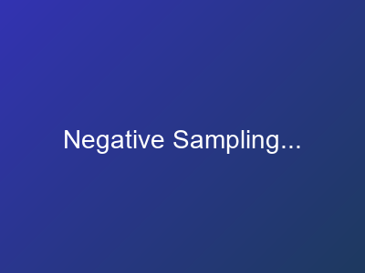
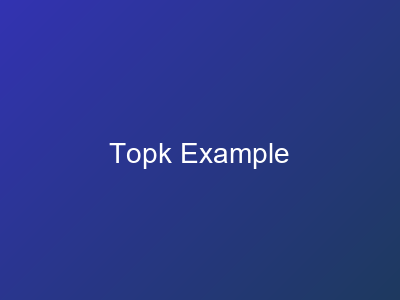

Natural Language Processing
From N-grams to Transformers: A Complete Graduate Course
12Topics
500+Slides
250+Charts
26+Notebooks
Discovery-Based
Problem-first pedagogy with worked examples
Rich Visualizations
250+ Python-generated charts
Hands-On Labs
Jupyter notebooks with exercises
Production Ready
From theory to deployment
Learning Journey
1
Language Foundations


2
Core Architectures

3
Advanced Methods


Chart Gallery (250+ Visualizations)
 Skip-gram
Skip-gram CBOW
CBOW Transformer
Transformer Beam Search
Beam Search Temperature
Temperature Word Arithmetic
Word Arithmetic Training
TrainingNeg. Sampling
 Contrastive
Contrastive Degeneration
DegenerationTop-K
 Vocab Dist
Vocab Dist